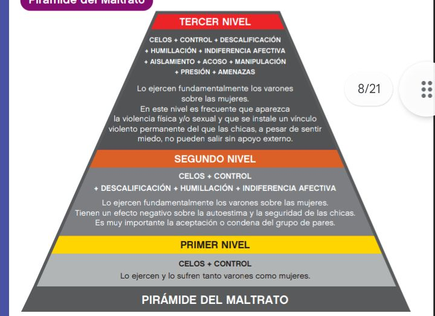

¿Que entendemos por noviazgo violento?
⋆Un noviazgo violento es cuando una pareja, sin vivir juntos, se agreden mutuamente o uno de los dos agrede al otro. Lo curioso de estas relaciones es que la violencia no hace que la pareja se separe.” Cuando decimos “noviazgo”, nos referimos a todo tipo de relaciones de pareja: desde los que están “saliendo” o “de novios”, hasta los que apenas se están conociendo. Esto incluye desde las relaciones más casuales y pasajeras hasta las que ya tienen planes juntos
¿Existe alguna señal a la cual estar alerta?
Algunas frases comunes en estas situaciones:
"No me gusta que salgas asi vestida"
"Tus amigos te comen la cabeza"
"No me gusta que salgas con tus amigos"
Piramide placeholder
¿Por qué pasa?
Vivimos en una sociedad que tolera altos niveles de violencia. Cuando algo nos parece “normal” decimos que está naturalizado. Naturalizamos las cargadas, ridiculizar al otro, los insultos amistosos y no tan amistosos, los empujones, los celos, el control de la pareja etc.
¿Los varones son mas violentos?
La violencia de los varones hacia las mujeres no es natural, sino aprendida a través de la cultura patriarcal o machista, que enseña a los hombres a ser dominantes y agresivos y a las mujeres a ser sumisas. Aunque esta forma de pensar ha perdido aceptación, aún persiste en muchos lugares, invisibilizando el maltrato y justificando la desigualdad de género. Las luchas feministas han logrado avances hacia la igualdad, pero la influencia del machismo sigue presente.
¿Que podemos hacer entre nosotros?
Para ayudar a alguien cercano que es víctima de un noviazgo violento, es fundamental ofrecer apoyo sin juzgar ni presionar. La persona necesita sentirse querida y valorada
Si sos amigo/a, escucha con respeto y sin juzgar, brindando confianza para mejorar su autoevaluación. Ofrece apoyo emocional y compañía, pero evita asumir el rol de psicólogo/a. Es fundamental ayudar a la persona a encontrar recursos profesionales, como un grupo de ayuda o un psicólogo, y motivarla a que busque esa ayuda.
Ademas de eso la línea gratuita 144 está disponible las 24 horas del día, todos los días del año, para quienes sufren o han sufrido violencia física, emocional o sexual
Subprograma "Lazos"
Este servicio ofrece contención, orientación y asistencia a mujeres que enfrentan violencia por parte de sus hijas/os de 14 años o más, ya sea que convivan o no con ellos
El Programa ofrece:
- Equipo de atención: Psicólogas especializadas en violencia familiar y coordinación de grupos.
- Entrevistas de admisión.
- Entrevistas de contención y orientación.
- Grupos de reflexión y apoyo psicológico.
- Asistencia psicológica individual.
Contacto:
Lunes a viernes de 8 a 15h, en Piedras 1281, 1° piso, oficina 107. Teléfono: 4307-6715.
Correo:
lazosmujer@buenosaires.gob.ar.
Asitencia a víctimas de maltrato infantil
El abordaje interdisciplinario ofrece asistencia, orientación y acompañamiento integral a niños, niñas y adolescentes de hasta 18 años que son víctimas de maltrato o violencia, así como a los adultos involucrados, sean o no responsables.
¿Que servicios nos brinda?
Nos ofrece apoyo psicosocial, asesoramiento jurídico, y grupos de apoyo para madres y adolescentes. También brinda atención a familiares de víctimas de abuso sexual infantil, evaluación y seguimiento de riesgo. Es para menores de 18 años que viven en la Ciudad y han sido víctimas de maltrato o abuso.
¿Qué programas a nivel nacional brindan apoyo y asesoramiento?
Línea 137:ofrece asesoramiento nacional y realiza intervenciones en Buenos Aires, como parte del programa "Las Víctimas contra las Violencias". La Oficina de Violencia Doméstica (OVD), es dependiente de la Corte Suprema, recibe denuncias las 24 horas, todos los días, en CABA.